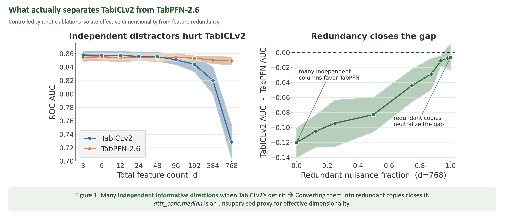

2026
ICML Workshop
First-author
Explaining Tabular Foundation Model Differences Through Meta-Features
With tabular foundation models now competing with well-tuned tree ensembles, it's often unclear which family will win on a given dataset. We test whether model-agnostic dataset meta-features can explain these performance gaps across the 51 TabArena datasets — and find that, under strict statistical control, global meta-feature approaches are not robust enough to offer reliable explanations.

@inproceedings{herre2026explaining,
title = {Explaining Tabular Foundation Model Differences Through Meta-Features},
author = {Markus Herre and Andrej Tschalzev and Sascha Marton and Christian Bartelt},
booktitle = {2nd ICML Workshop on Foundation Models for Structured Data},
year = {2026},
url = {https://openreview.net/forum?id=FJSkVoD4k3}
}